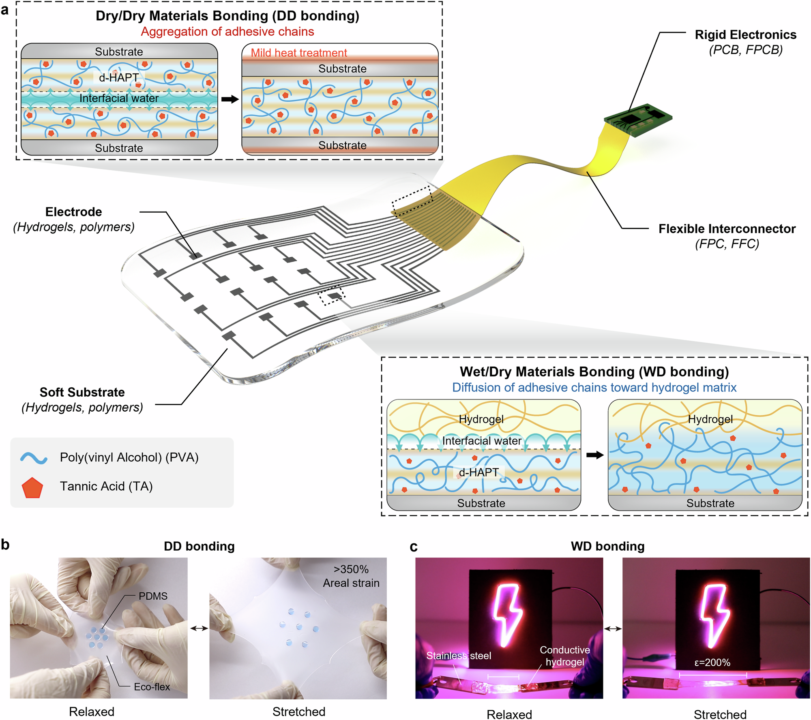

연구 배경과 분류
건조 부품끼리, 또는 하이드로젤과 건조 부품 사이를 접합하는 재료다. 착용형·급성 이식 소자의 조립을 다루므로 소자 통합에 배치했다. 배선–칩의 전기 접속에 한정되지 않는 이종 재료 조립이라는 점에서 확장 분류다.
경계 분류: 탐색을 위해 가장 가까운 주제를 배정했습니다. 분류 근거와 교차 연관을 함께 읽어야 하며, 주 테마만으로 연구 범위를 한정할 수 없습니다. 기초 연구의 분류는 직접적인 바이오전자 응용을 입증하지 않습니다.
연성 전자소자의 이종 재료 접합
연성 전자기기는 하이드로젤·탄성체·전극처럼 서로 다른 재료를 함께 사용합니다. 각 재료가 잘 늘어나더라도 연결면이 떨어지면 전체 기기의 기능이 무너질 수 있습니다. dHAPT 연구는 개별 재료의 물성을 바꾸기보다 이들을 이어 주는 얇은 접착 계면에 초점을 둡니다.
핵심 접근과 발전
건조한 PVA–탄닌산 기반 층을 이용하고 수분에 따른 사슬 이동과 계면 상호작용을 접합에 연결합니다. 건조–건조 접합과 젖은–건조 접합은 초기 상태와 물의 역할이 다릅니다. 특히 건조–건조 조립에는 물 제거를 위한 열처리 단계가 있으므로 모든 재료가 같은 조건에서 즉시 붙는다고 설명하지 않습니다.

d-HAPT 접착층이 연성 기판·전극·연결선과 회로를 잇는 원리 및 인장 중 접합 유지 시연입니다. 논문의 원그림이며 생성 이미지가 아닙니다.
Yejin Jo, Yurim Lee, Jeong Hyun Heo 외. “Universal hydrogel adhesives with robust chain entanglement for bridging soft electronic materials”. Figure 1. DOI: 10.1038/s41528-024-00327-x. CC BY 4.0. 기존 무손실 WebP 변환 자산을 그대로 재사용했습니다. 원그림 픽셀 내용은 변경하지 않았습니다.
원그림과 원문 설명 ↗ · DOI: 10.1038/s41528-024-00327-x ↗ · CC BY 4.0 ↗
평가 방법과 조건
전단 시험은 접합면과 나란한 하중을, T형 박리는 계면을 벌리는 하중을 평가합니다. 시편 재료와 두께, 수분 상태, 조립 조건을 맞춰야 접착 성능을 비교할 수 있습니다. 생체적합성과 기기 적용 시험도 접착 강도 자체를 대신하는 것이 아니라 연결된 구조가 사용될 수 있는지를 보는 별도 단계입니다.
주요 결과
젖은–건조 접합 시험에서 dHAPT 처리 Ecoflex 위의 하이드로젤은 함께 늘어났고 시편이 파단될 때까지 계면이 유지되었습니다. 미처리 Ecoflex에서는 겔이 기판과 함께 늘어나지 못하고 박리되었습니다. 이 대조는 수분 매개 접합이 부품 사이의 변형 전달을 개선한다는 설명과 연결되며, 모든 재료 조합의 수명을 입증하는 결과로 확대하지 않습니다.
한계와 남은 질문
편집상 후속 질문은 반복 변형과 수분 교환 중 접합 특성이 유지되는지입니다. 급성 동물 적용은 장기 삽입 안전성과 구분해야 하며, 표면 전처리와 접착층 두께가 다른 비교군을 단순 수치로 순위화하지 않습니다. 미검토 보충자료와 원자료의 전수 검증은 완료 범위에 포함하지 않습니다.
관련 외부 연구
Instant tough bonding of hydrogels for soft machines and electronics
공개 본문의 Results와 Bonding to diverse materials 절을 확인했다. Wirthl 등의 시아노아크릴레이트 분산 접착은 하이드로젤 계면의 빠른 중합을 이용한다. d-HAPT의 건조 다층막 재수화와 다른 통합 경로다.
외부 연구는 실리콘 기판에 프라이머를 사용한다. 전처리, 하이드로젤 조성 및 박리 시험을 맞추기 전에는 강도 우열을 정하지 않는다.
본문 확인교신저자 확인
서정목 교신 확인아래는 서정목의 교신저자 여부에 관한 확인 기록입니다. 저자 순서나 별표만으로 판정하지 않으며, 본문 내용 검증과 별도로 읽어야 합니다.
- 교신 고지 확인 출처 ↗
Correspondence and requests for materials should be addressed to Jungmok Seo.
Published PDF page 13: correspondence/author information; title and DOI page 1 · local_published_pdf_read
- 본문 확인 범위
- 공개 출판사 웹 본문에서 서지, 초록, 접착 기전, 기계 시험 및 생체 적용 절을 확인했다. 보충자료 전체와 원데이터는 검토하지 않았다. 아래 비교 조건과 후속 검증 과제는 편집자의 제안이다. 일치하는 출판 PDF의 WD 접합·내구 절에서 Fig. 4b–c의 처리/미처리 Ecoflex 대조를 재확인했습니다.
- 보충자료 확인 범위
- 보충자료를 전수 검토하지 않았습니다. 본문에서 보충자료를 인용한 사실과 해당 보충자료를 직접 확인한 범위를 구분합니다.
- 남은 확인
- 학교 Chrome 확인 시 보충표의 비교 접착제 조건과 피로·침지 데이터를 대조한다. Figure 1의 재사용 조건은 그림 아래에 표시했다.
COVERAGE & OUTREACH
보도와 소개
논문과의 연관성을 확인한 소개 자료입니다. 언론 게재는 독립 취재나 실험 결과의 추가 검증을 뜻하지 않습니다.
Innovative Hydrogel Adhesives for Seamless Integration of Soft Electronic Devices ↗
Behind the Paper 글이 전체 논문 제목·저자와 s41528-024-00327-x 링크를 제시하고 d-HAPT의 건식·습식 접합을 설명한다.
본문 확인 저자명, 날짜 및 본문을 읽었다. 출판사 커뮤니티에 실린 교신저자 해설이며, 출판사 편집진의 독립 평가로 분류하지 않는다.
연세대 서정목 교수팀, 만능 유연 전자소자 접착 기술 개발 ↗
서정목·조예진·이유림, npj Flexible Electronics 및 다층 하이드로겔로 이종 전자 재료를 접합하는 설명이 #80과 일치한다.
본문 확인 기사의 날짜·본문을 읽었다. 대학 발표와 연구진 제공 설명을 전달한 기사이며 다른 매체의 동일 발표 재서술과 구분해 둔다.
연세대 서정목 교수팀, 유연 전자소자 접착 기술 개발 ↗
서정목·조예진·이유림, npj Flexible Electronics 및 다층 하이드로겔로 이종 전자 재료를 접합하는 설명이 #80과 일치한다.
본문 확인 기사의 날짜·본문을 읽었다. 대학 발표와 연구진 제공 설명을 전달한 기사이며 다른 매체의 동일 발표 재서술과 구분해 둔다.
근거와 확인 범위
공개 출판사 웹 본문에서 서지, 초록, 접착 기전, 기계 시험 및 생체 적용 절을 확인했다. 보충자료 전체와 원데이터는 검토하지 않았다. 아래 비교 조건과 후속 검증 과제는 편집자의 제안이다. 일치하는 출판 PDF의 WD 접합·내구 절에서 Fig. 4b–c의 처리/미처리 Ecoflex 대조를 재확인했습니다.
추가 해설은 아래에 명시한 근거 범위에서 편집 검토를 승인한 내용입니다. 모든 본문·보충자료의 검증 완료를 뜻하지 않습니다.
- 추가 본문 확인 범위
- 공개 출판사 웹 본문에서 서지, 초록, 접착 기전, 기계 시험 및 생체 적용 절을 확인했다. 보충자료 전체와 원데이터는 검토하지 않았다. 아래 비교 조건과 후속 검증 과제는 편집자의 제안이다. 일치하는 출판 PDF의 WD 접합·내구 절에서 Fig. 4b–c의 처리/미처리 Ecoflex 대조를 재확인했습니다.
- 추가 보충자료 확인 범위
- 보충자료를 전수 검토하지 않았습니다. 본문에서 보충자료를 인용한 사실과 해당 보충자료를 직접 확인한 범위를 구분합니다.
- 원본 공개 논문 목록 ↗ · #80 · 2026-10-03
- Crossref metadata ↗: 이 Crossref 항목은 공개 서지 메타데이터 대조 기록입니다. 초록·본문·보충자료의 실제 열람 범위는 이 페이지의 별도 근거 기록에 명시하며, 서지 대조만으로 전문 열람이나 본문·보충자료 전체 검증 완료를 판정하지 않습니다. license_urls는 등록된 링크 목록이며 본문·그림 재배포 허가를 의미하지 않습니다. TDM 또는 게시 정책 링크가 포함될 수 있습니다.
- Universal hydrogel adhesives with robust chain entanglement for bridging soft electronic materials ↗
public_web_full_text · Abstract; Results: DD bonding mechanism and durability / WD bonding mechanism; Methods: Bonding process, Lap shear tests, T-peel tests, In vivo biocompatibility test, Implantable bioelectronic device applications. Checked 2026-10-03. - Universal hydrogel adhesives with robust chain entanglement for bridging soft electronic materials ↗
public_publisher_selected_full_text_read · Abstract; Results: DD bonding mechanism and durability; WD bonding mechanism - Universal hydrogel adhesives with robust chain entanglement for bridging soft electronic materials ↗
public_publisher_selected_full_text_read · Results: DD and WD bonding mechanisms; Methods: Bonding process, including DD thermal water removal - Universal hydrogel adhesives with robust chain entanglement for bridging soft electronic materials ↗
public_publisher_selected_full_text_read · Methods: Lap shear tests; T-peel tests; In vivo biocompatibility; Implantable bioelectronic applications - Universal hydrogel adhesives with robust chain entanglement for bridging soft electronic materials ↗
public_publisher_selected_full_text_read · Results: WD bonding mechanism and durability, Fig. 4b–c; treated versus untreated Ecoflex with PAAm–alginate hydrogel - Universal hydrogel adhesives with robust chain entanglement for bridging soft electronic materials ↗
local_published_pdf_selected_full_text_read · Matching published PDF: WD bonding mechanism and durability, Fig. 4b–c paragraphs reread - Universal hydrogel adhesives with robust chain entanglement for bridging soft electronic materials ↗
public_publisher_selected_full_text_read · Methods: bonding and acute biological applications; editorial durability questions - Universal hydrogel adhesives with robust chain entanglement for bridging soft electronic materials ↗
independent_reviewer_selected_main_text · Title/DOI-matched locally held published PDF pp.5–7,9; dry–dry and wet–dry bonding and Ecoflex delamination comparison - 추가 해설의 근거 ↗
연구 배경 · Abstract; Results: DD bonding mechanism and durability; WD bonding mechanism · public_publisher_selected_full_text_read - 추가 해설의 근거 ↗
핵심 접근과 발전 · Results: DD and WD bonding mechanisms; Methods: Bonding process, including DD thermal water removal · public_publisher_selected_full_text_read - 추가 해설의 근거 ↗
평가 방법과 조건 · Methods: Lap shear tests; T-peel tests; In vivo biocompatibility; Implantable bioelectronic applications · public_publisher_selected_full_text_read - 추가 해설의 근거 ↗
주요 결과 · Results: WD bonding mechanism and durability, Fig. 4b–c; treated versus untreated Ecoflex with PAAm–alginate hydrogel · public_publisher_selected_full_text_read - 추가 해설의 근거 ↗
주요 결과 · Matching published PDF: WD bonding mechanism and durability, Fig. 4b–c paragraphs reread · local_published_pdf_selected_full_text_read - 추가 해설의 근거 ↗
한계와 남은 질문 · Methods: bonding and acute biological applications; editorial durability questions · public_publisher_selected_full_text_read - 추가 해설의 근거 ↗
관련 연구와의 연결 · Bonding mechanism; related cyanoacrylate paper Results and silicone-primer conditions · public_publisher_selected_full_text_read - 추가 해설의 근거 ↗
관련 연구와의 연결 · Instant tough bonding of hydrogels for soft machines and electronics; DOI 10.1126/sciadv.1700053; previously verified selected Results · public_external_selected_full_text_read